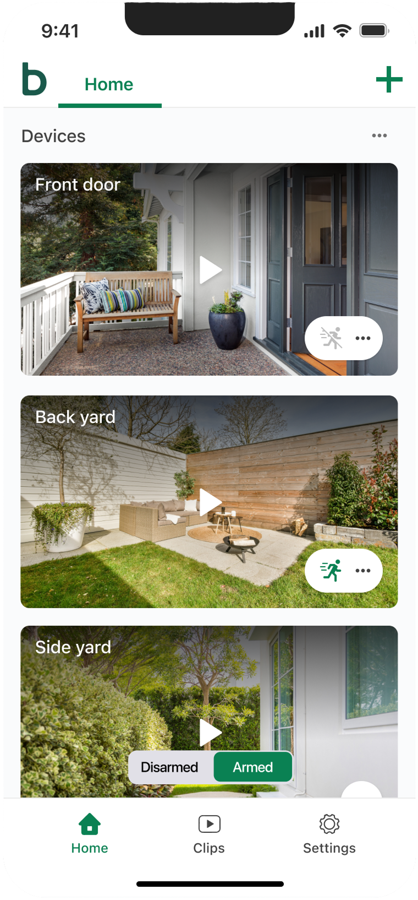
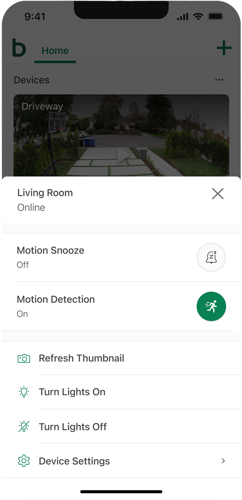
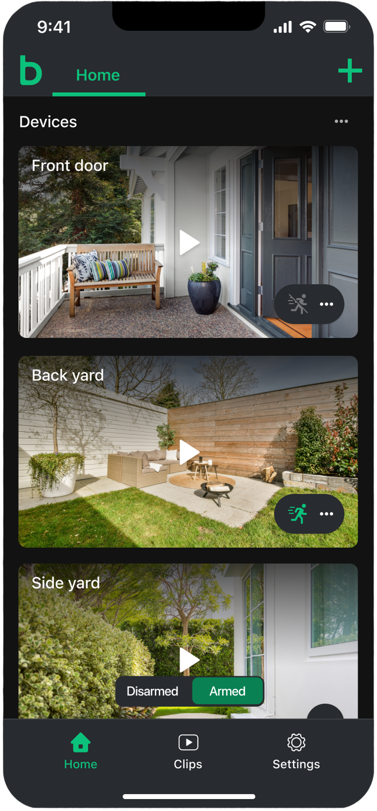

Background
Amazon's Blink brand is a consumer-focused WiFi security camera system used by millions of customers to keep an eye on their homes. The mobile app is currently the only way users interact with Blink products. In the app, users can check a camera's live view, watch recorded clips, and more.
Over time, the app's interface had grown dated and was unintuitive and limited in its ability to scale to support new products and features. A redesign was needed to bring consistency, accessibility, scalability, and a more polished feel to the overall experience.
The Challenge
We focused on two areas that are a core part of a customer's daily usage of the app: the Home screen, which is the default landing page and contains access to all of the user's cameras, and the Clip List, where users browse recordings of events that their cameras captured. Together, these are among the highest-traffic screens in the entire application and contain the Blink platform's core functionality.
Redesigning them meant balancing a lot of competing needs. On the Home screen, customers needed quick access to live views and system controls, while designing a system that was scalable for future products and features. On the Clips list, users needed a scannable way to review dozens of clips across multiple cameras and locations. Any change had to feel intuitive enough for existing users while still delivering a meaningfully better experience for all.
Our Goals
High-level goals we set for this project:
- Modernize the visual design with a cleaner, more consistent interface
- Develop an interface that was scalable and sustainable, allowing the company to add more products and functionality.
- Improve scannability so users can find clips faster
- Make common actions intuitive and easy to access while improving usability.
Home Screen
The previous Home screen surfaced a number of action buttons that did not have clear definition. Users like the fact that these buttons were at the top level and easy to access, but there was a significant learning curve for new users to understand what each button did. There were also issue with visual weight, spacing, tappable elements being too close together, and more.

The previous Home screen
The redesigned Home screen keeps camera feeds front and center with a more modern, clean look. Each device is shown as a large, immersive card with a large thumbnail and a prominent play button that opens live view. We kept the motion detection status (enabled or disabled) at the top level so it was always visible and integrated it into a more actions button that housed all other device-level actions.

Device-level actions — like toggling motion detection, refreshing a thumbnail, or adjusting lights — were consolidated into a clean action sheet. This offered a number of positive improvements:
- Ensured device-level actions were now found in one consistent place.
- Removed unnecessary visual clutter from the Home screen, allowing the user to focus on the content of their cameras.
- Allowed actions to use both an icon, label, and optional subtext to improve usability, making it easier for new users to navigate the space.

A device action sheet for quick camera controls
Dark mode received the same level of care. Camera cards, navigation, and controls were designed to feel native in both themes — not simply inverted, but thoughtfully adapted for low-light use.

The redesigned Home screen in dark mode
Clip List
The Clip List is where users go to review what happened — motion events, doorbell rings, live view recordings, and more. The previous design was outdated, visually unrefined, and the list of recordings was very dense.

The previous Clip List design
In the redesigned version, clips are organized into clear date groupings with event counts, rich thumbnails, and descriptive tags for event types — motion, doorbell, person detection, and live view. Each clip is shown as an individual card, making it easier to scan, discern each clip, and identify important information. The cloud storage indicator was moved to be a little more subtle while still visible at the top level.

My Role
As the lead designer on this project, I was responsible for the visual and interaction design of both the Home and Clip List experiences. I worked closely with product and engineering to explore concepts, refine layouts, and validate designs against the needs of a large and diverse customer base.
This included competitive research, iterating on high-fidelity mockups, usability studies, and more.
The Result
The redesign of the Home Screen and Clip List successfully modernized the app for over 7.5 million users. By creating a cleaner and more intuitive layout, we made it easier for people to connect with their cameras, giving them more peace of mind.
This positive impact was immediately clear with the updated Camera Tile, which caused Live View usage to nearly double, jumping to 1.88 daily views per user (from the 1.02 baseline).
The refreshed Clip List also provided a smoother, faster way for users to watch and manage their saved videos. While updating a familiar design naturally requires an adjustment period for long-time customers, the new interface achieved its main goal: delivering an easy-to-use, modern experience that actively encouraged people to engage more with their smart home system.